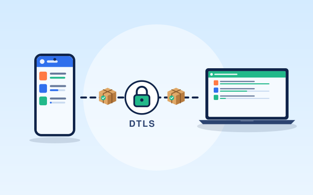
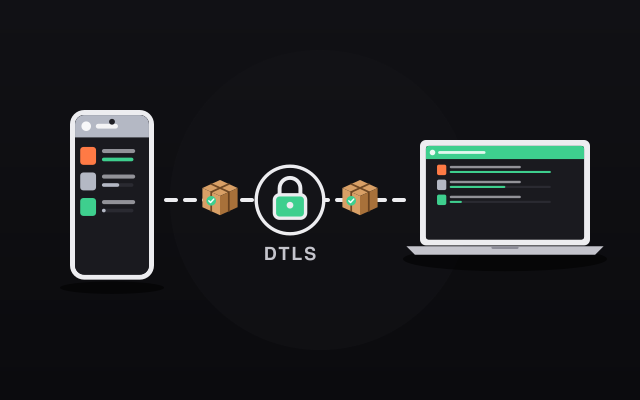
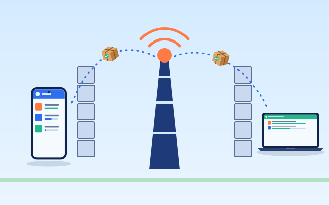
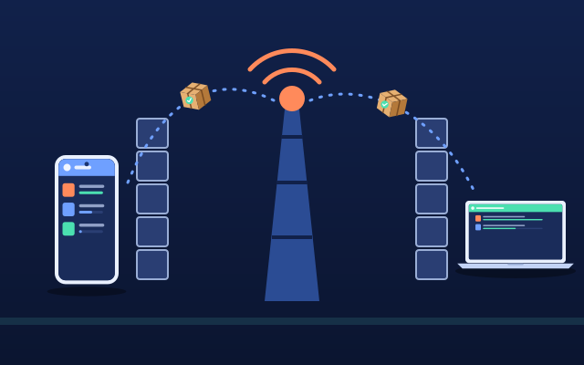
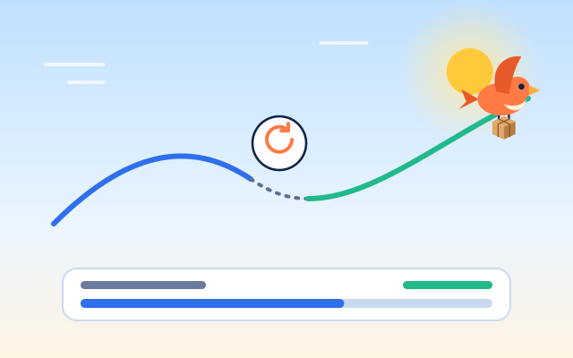
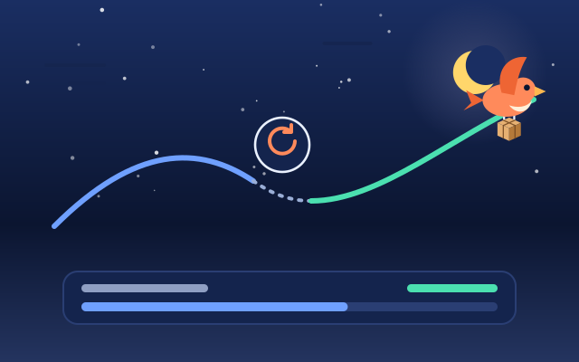
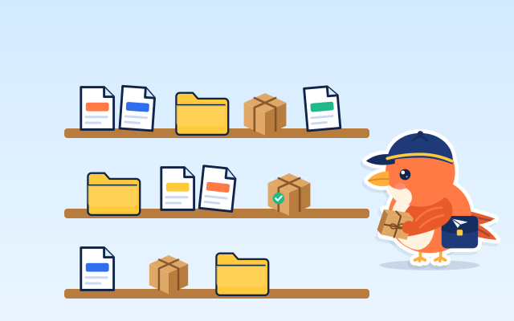
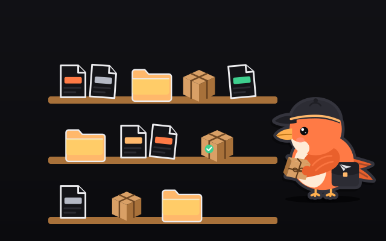

Whole folders
Drop a folder and its tree arrives intact: subfolders, names and all. Paths are checked so nothing can be written outside the folder you choose.
Direct flight file transfer
Like a personal drive between your phone and your computers, without the drive. Share an invite link or QR code and files and whole folders of any size fly from one device to the other, end to end encrypted.
No server of ours ever touches your files or messages.
Nothing to sign up for, nothing to log in to.
Files go device to device, never to a storage service.
Every connection is encrypted with DTLS by the browser.
filefinch sets no cap. Your disk is the only limit.
How it works
There is no signaling server. The invite itself carries everything the second device needs to reach the first, compressed into a link and a QR code.

Open filefinch on the first device and tap Create invite. You get a link and a QR code. Scan it with the other device, or send the link to yourself through any messenger.
The second device answers with a short reply code, also as a link or QR code. Paste it or scan it on the first device. That single round trip connects them, and you can paste by hand if a camera is not handy.

Both screens show the same short fingerprint. Compare it, then drop files or a folder. They stream straight to the other device, in either direction, with progress, previews and resume.
Why it is private
Explained simply: filefinch is a web page that connects two browsers to each other. After that, it steps out of the way.




Some networks block every direct route. Then a TURN relay can forward the traffic between the two devices. A relay only passes along encrypted packets and cannot read them, but it does see that two addresses are talking and how much data flows. filefinch tells you when a relay is in use, and you can add your own TURN server in Settings so only a relay you trust is used.
To find a route, each browser asks a public STUN server for its public address. That server sees your IP address, as every website you visit does, and nothing else. The invite link contains the network addresses of the device that created it, so share it only with your own device or with the person you are sending to.
No software can promise it is impossible to attack. What filefinch can promise is a short list of things that never happen: no upload to us, no account, no copy left online.
Features
Built for real files: big videos, deep folders, flaky Wi-Fi and phones that fall asleep.
Drop a folder and its tree arrives intact: subfolders, names and all. Paths are checked so nothing can be written outside the folder you choose.
If Wi-Fi blinks or a tab sleeps, reconnect and the transfer continues from the last confirmed piece instead of starting over.
See photos, videos, audio, PDF and text right in the browser. Previews are drawn safely, so a received page or script never runs.
Keep a folder in step between two computers: two way, push or pull. You review the plan of changes before anything is written.
Keep received files in a library inside filefinch, stored in this browser on your own device, to preview, save or send again later. Nothing is kept online.
One link or one QR code to connect, one short reply to finish. Scan with the camera or paste, whatever is easier.
Both screens show the same short code. Compare it and you know nobody swapped the invite in the middle.
Add a passphrase and every chunk is sealed again with AES-GCM, with a key derived on each device. Nothing about it travels in the invite.
Every file is hashed with SHA-256 while it streams, and the receiver checks the result before marking it done.
Install it as an app. Once loaded, the app itself works without internet, so two devices on the same local network can still connect.
When a direct route is impossible, filefinch says so in plain words and lets you add your own TURN relay in Settings.
Windows, macOS, Linux, Android and iPhone. No app store, no install required, nothing to update.





Device scenarios
filefinch runs in the browser, so the pair can be anything with a modern browser.

Videos arrive in their original quality and size. Nothing is recompressed.
Start sending
Two approaches
Both are useful. Uploading to storage is great when the receiver is offline. A direct transfer is better when you want the file on your other device now, privately and without limits.
| Upload to cloud storage | Direct with filefinch | |
|---|---|---|
| Where your files go | Uploaded to a storage service, then downloaded | Straight from one device to the other |
| Waiting time | Upload first, then the download can start | The receiver gets data as soon as it is sent |
| Account | Usually needed, at least for large files | None |
| Size limits | Set by the plan you are on | None set by filefinch |
| Copies left online | Until a link expires or you delete them | None, nothing is stored online |
| Who can read the files | The service can, unless it offers client side encryption | Only the two devices (DTLS, plus an optional passphrase) |
| Both devices online | Not needed, the receiver can download later | Needed while the files fly |
| Works without internet | No | Yes, on the same local network once the app is loaded |
Limits, honestly
No middle storage means a few rules of the air. Here they are, before you find out the hard way.

FAQ
Yes. It is free and open source under the MIT license. There are no plans, no ads, no account and no tracking. Since there is no server of ours carrying your files, there is nothing to pay for.
No. Files travel over a direct WebRTC connection between your two browsers. The only exception is a TURN relay, used only when both networks block direct connections. A relay forwards encrypted packets it cannot read, and filefinch tells you when one is in use.
filefinch sets none. Files are read and sent in small chunks, so a 50 GB video works the same way as a photo. The real limits are free space on the receiving device and how long both devices stay connected.
Yes. There is no storage in the middle, so the sender and the receiver must both have filefinch open while the files fly. If one closes the tab, the transfer pauses and can resume when you reconnect.
Open filefinch on the first device and create an invite. Open the invite link or scan its QR code on the second device. It shows a short reply code; send it back by any messenger or scan it, and the devices connect directly.
Yes. Pick or drop a folder and filefinch sends every file with its relative path. In browsers with folder access the tree is written straight into a folder you pick; elsewhere the folder arrives as one streamed .zip download.
Yes. filefinch runs in the browser, so any pair of modern browsers can connect: Android to iPhone, Windows to Mac, phone to PC or laptop to laptop.
Usually one network is very strict (symmetric NAT or a corporate firewall). filefinch detects the failed connection, explains it in plain words and offers the TURN setting. Trying another network, like a phone hotspot, often works too.
An invite works for one connection. Treat the link like a key: send it only to your own device or to the person you are sending to. Comparing the connection fingerprint on both screens confirms you are talking to the right device.
Once the app is loaded or installed it works offline. Two devices on the same local network can still connect through the invite and reply codes, because they find each other on the local network.
Guides
Practical guides for moving files between your own devices.
 send large files without limitsHow to send large files without limits, straight from device to deviceRead the guide transfer files from phone to pc without cableHow to transfer files from phone to PC without a cableRead the guide
send large files without limitsHow to send large files without limits, straight from device to deviceRead the guide transfer files from phone to pc without cableHow to transfer files from phone to PC without a cableRead the guide  airdrop for windows and androidAirDrop for Windows and Android, and a way that works on every deviceRead the guide send a whole folderHow to send a whole folder, subfolders and allRead the guide
airdrop for windows and androidAirDrop for Windows and Android, and a way that works on every deviceRead the guide send a whole folderHow to send a whole folder, subfolders and allRead the guide  is webrtc file sharing safeIs WebRTC file sharing safe? What it protects and what it does notRead the guide peer to peer file transferPeer to peer file transfer explained, without the jargonRead the guide
is webrtc file sharing safeIs WebRTC file sharing safe? What it protects and what it does notRead the guide peer to peer file transferPeer to peer file transfer explained, without the jargonRead the guide 
Open filefinch on two devices and send your first file in under a minute. Free, open source, no account.